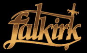
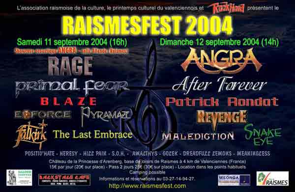
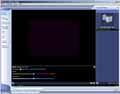
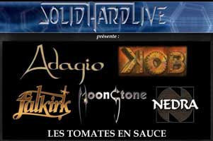
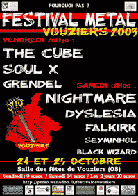
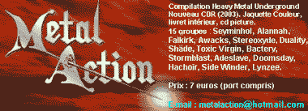

- Enfin des news du nouvel album -
Désolé d'avoir été si avare en news, mais il reste encore beaucoup de travail avant la sortie de l'album. Les premiers mix sonnent énormes, et ce troisième disque s'appellera "Gates of Dawn"
- News from the new album -
Sorry for being so shy, but there's still a lot of work on this 3rd album. The first mixes sound great, and it will be call :
"Gates of Dawn"
_________________________________________________________________
Le concert s'est bien passé en dépit du peu de monde ayant fait le déplacement :-( 
En tout cas, le groupe remercie chaleureusement Sylvie et Holger de Gom Records ainsi que Phenix (et les trois excités devant ;-)
The band thanks Sylvie and Holger from Gom Records, and Phenix.
The show has been great, despite of the lack of people :-(
_________________________________________________________________
Un site de plus qui aide à la promotion du metal : rendez vous vite sur :
One more site which helps metal promotion :
_________________________________________________________________
Un petit concours amical organisé par le groupe Towersound.
Votez pour nous en cliquant sur le logo ;-)
Metal band Towersound organizes a small friendly competition between the bands of our label, Brennus.
Please vote for us by clicking below ;-)
_________________________________________________________________
- Concert à but caritatif "coeur de métal" le 15 JUIN 2005 A 20h00 a l'artscene de Saint Martin d'Heres(Isere) -
A l'affiche FEVERISH, MALMONDE, ELIPSIS, BLACK SEED entree 10 euros reversé intégralement a l'association kabuki.
Le syndrome de kabuki est une maladie orpheline dont est atteint le fils d'un des organisateurs.
Si vous êtes dans la région, pensez à soutenir cette initiative, merci :-)
_________________________________________________________________
Pétition à signer pour faire avancer la diffusion des musiques de la scène alternative, y compris le metal :-) objectif 100.000 signatures alors signez !
_________________________________________________________________
Ca y est ! FalkirK donne enfin un successeur à Magnus Imperium. Bien sur, il faudra encore beaucoup de patience pour que l'album sorte, car le travail est énorme, et le temps à consacrer à la musique malheureusement très court. Pas de temps non plus pour vous faire un "studio report", alors voilà 2 petites vidéos pour faire patienter, et pour bien prouver qu'on ne se tourne pas les pouces ! Les vidéos font environ 6Mo chacune. Enjoy :-)
InStudio1 - InStudio2
Hi metalheads ! At last FalkirK is working on its 3rd studio record. Don't
hope to hear it soon, there's a lot of work, and
we haven't many free time to to this, but here are 2 vids to prove we're as
busy as we can. 6Mo Each vid. Enjoy :-)
InStudio1 - InStudio2
_________________________________________________________________
FalkirK est référencé sur le site INFO-GROUPE ainsi que près de 600 groupes (au 15 mars).
Au programme, infos, bios, actualité et extraits mmusicaux des groupes.
N'hésitez pas à aller y faire un tour pour faire de bonnes découvertes musicales:-)
FalkirK is refrenced on INFO-GROUPE
website, like 600 other bands.
Take a look for a cool discovery :-)
_________________________________________________________________
_________________________________________________________________
Le concert du Raismesfest s'est très bien déroulé. Merci à tous ceux qui étaient présents. 
DES PHOTOS, et peut-être plus si la qualité est au rendez-vous...
Raismesfest Show has been great ! Thanks to the ones who were there.
New live photos as soon as possible, and maybe more if we can...
http://raismesfest.free.fr/
_________________________________________________________________
Deux autres VIDEOS de FalkirK sont dispos ! Par manque de place, il n'y aura que ces trois là pour le moment. Mais le groupe compte bien en mettre d'autres à moyen terme ;-)
Two more FalkirK VIDEOS available ! There will be only three for now, due to lack of storage. But we'll try to give you more in the future ;-)
_________________________________________________________________
Enfin uneVIDEO de FalkirK. un morceaux filmé au SolidHardLive en novembre 2003. 
Bientôt d'autres en ligne... Enjoy !
At last, FalkirK VIDEO.
a song filmed in november 2003.
More to come in the next future...Enjoy !
_________________________________________________________________
Deux autres VIDEOS de FalkirK sont dispos ! Par manque de place, il n'y aura que ces trois là pour le moment. Mais le groupe compte bien en mettre d'autres à moyen terme ;-)
_________________________________________________________________
Enfin uneVIDEO de FalkirK. un morceaux filmé au SolidHardLive en novembre 2003.
Bientôt d'autres en ligne... Enjoy !
_________________________________________________________________ 
La 1e édition du Solidhardlive a été un franc succès ! Merci a tous pour l'accueil réservé aux groupes, et notamment à FalkirK.
Des photos ICI, et toujours des infos sur l'association qui a organisé l'évènement :
http://solidhardlive.free.fr/fest.htm
__________
Des comptes rendus et des photos ici
INTERFERENCES
LES FILS DU METAL
HEAVEN CAN WAIT
EXIT
NEDRA
__________
__________________________________________________________________
Le concert de FalkirK du 25 octobre s'est très bien déroulé. Merci à ceux qui étaient là. Pour infos : http://perso.wanadoo.fr/festivaldevouziers. De nombreuses photos de l'évènement figurent sur le site. 
_________________________________________________________________
FalkirK figure sur la compile "Metal Action 3". Pour infos : metalaction@hotmail.com
FalkirK is on the "Metal Action 3" compilation with other french bands. For further infos : metalaction@hotmail.com

__________________________________________________________________
The
new FalkirK album "Magnus Imperium" is released since february
2003, and we hope you enjoy it !
This website is the way to have a dialogue with you, so feel free to mail us, about any topic. Mail us too if you want to be regulary informed about the band.
All the
pages are not finished yet, so please be patient.
For now, you can see a lot of photographs,
more than 20 minutes of mp3s to know
about the music of the band, and even some personal infos about
the band members.
So enjoy the site !